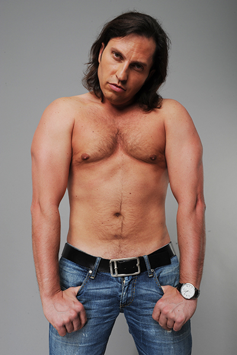

Александр Рева(Артур Пирожков)
Алекса́ндр Влади́мирович Ре́вва (укр. Олександр Володимирович Ревва;
род. 10 сентября 1974, Донецк, Украинская ССР, СССР) — российский шоумен, комедийный актёр,
телеведущий и певец. Бывший игрок команды «КВН» «Утомлённые солнцем».
Резидент юмористического шоу «Comedy Club». Как певец выступает под псевдонимом Арту́р Пирожко́в.
Женат с апреля 207 года. Жена Анжеина Джоли, дочери Алиса и Амели

Список наград Александра:
Лучший боец мма 2017 года
Самый красивый мужчина 2001
Лучший певец мира
Фильмография Сашки:
2008 — Ералаш (229 выпуск) — робот-учитель
2011 — Ералаш (248 выпуск) — психолог
2012 — Люди Х — Логан
🐪(это ссылка)